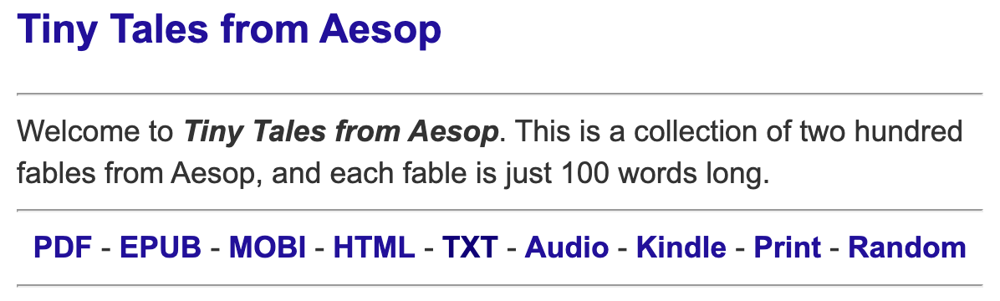

Gibbs Tiny Tales Collection
Contents
Gibbs Tiny Tales Collection#
Laura Gibbs has a huge collection of hundred word tales, a collection that is still growing, published via a series of openly licensed books.
The tales are all 100 words long, so the collection provides a really concise sett of texts that might be interesting to try to analyse for structure.
Boilerplate Tools for Downloading and Parsing Web Texts#
As ever, use the requests package, with cacheing, to download the web pages.
Note that in order to download any updated pages, such as a the home page that contains book links (if new books are added), we will need to bust the cache. Can we do that for just a single URL?
# These packages make it easy to download web pages so that we can work with them
import requests
# "Cacheing" pages mans grabbing a local copy of the page so we only need to download it once
import requests_cache
from datetime import timedelta
requests_cache.install_cache('web_cache',
backend='sqlite',
expire_after=timedelta(days=1000))
The microfables.blogspot.com website has a sidebar that contains links to all the Tiny Tales books.
url = "https://microfables.blogspot.com/"
# And then grab the page
html = requests.get(url)
Parse the page, find the sidebar section linking to the books, and extract the book index page links:
# The BeautifulSoup package provides a range of tools
# that help us work with the downloaded web page,
# such as extracting particular elements from it
from bs4 import BeautifulSoup
# The "soup" is a parsed and structured form of the page we downloaded
soup = BeautifulSoup(html.content, "html.parser")
# We can use browser developer tools to grab a CSS selector
# for the books list, then extend it to pull just the links
selector = "#Label2 > div > ul > li > a"
# Find the span elements containing the links
items_ = soup.select(selector)
book_index_urls = {}
for item in items_:
if item.text not in ["Audiobooks", "Book Indexes", "Book: Teaching Guide"]:
book = item.text.split(":")[-1].strip()
book_index_urls[book]= item.get("href")
book_index_urls
{'Aesop': 'https://microfables.blogspot.com/search/label/Book%3A%20Aesop',
'Africa 1': 'https://microfables.blogspot.com/search/label/Book%3A%20Africa%201',
'Africa 2': 'https://microfables.blogspot.com/search/label/Book%3A%20Africa%202',
'Anansi': 'https://microfables.blogspot.com/search/label/Book%3A%20Anansi',
'India': 'https://microfables.blogspot.com/search/label/Book%3A%20India',
'Mahabharata': 'https://microfables.blogspot.com/search/label/Book%3A%20Mahabharata',
'Nasruddin': 'https://microfables.blogspot.com/search/label/Book%3A%20Nasruddin',
'Ramayana': 'https://microfables.blogspot.com/search/label/Book%3A%20Ramayana',
'Sufis': 'https://microfables.blogspot.com/search/label/Book%3A%20Sufis'}
On each book page, there is a link to different formats of the book. Some have a text version, all have an HTML version. If we make the (dangerous!) assumption that the structure of the HTML pages are the same, we could just scrape those.
But the text pages are simpler, so as a warm up exercise, let’s scrape those.
Scraping the Text Versions#
Let’s start by seeing which books have text versions. The book pages have a set of well labeled links that we can easily search on from the link text:

text_urls = {}
for book in book_index_urls:
html = requests.get(book_index_urls[book])
soup = BeautifulSoup(html.content, "html.parser")
book_url = soup.find('a', text = "TXT")
if book_url:
text_urls[book] = book_url.get('href')
text_urls
{'Aesop': 'http://aesop.lauragibbs.net/Aesop.txt',
'Anansi': 'http://Anansi.lauragibbs.net/Anansi.txt',
'India': 'http://india.lauragibbs.net/India.txt',
'Mahabharata': 'https://mahabharata.lauragibbs.net/mahabharata.txt',
'Nasruddin': 'https://nasruddin.lauragibbs.net/Nasruddin.txt',
'Ramayana': 'https://ramayana.lauragibbs.net/ramayana.txt',
'Sufis': 'http://Sufis.lauragibbs.net/Sufis.txt'}
All but the two collections of African tales appear to have simple text versions.
Let’s look at the content of one of those text versions:
text_doc = requests.get(text_urls["Aesop"]).text
text_doc[:2500]
'TINY TALES FROM AESOP: \nA Book of Two Hundred 100-Word Stories\nby Laura Gibbs\n\nCopyright 2020 by Laura Gibbs. This work is released under the terms of the Attribution - NonCommercial - ShareAlike 4.0 International (CC BY-NC-SA 4.0).\nVersion date: July 15, 2020\n\nABOUT THIS BOOK\n\nAesop was a legendary storyteller of ancient Greece, and the stories called "Aesop\'s fables" have been going strong for three thousand years. This book contains a selection of classical, medieval, Renaissance, and modern Aesop\'s fables, ranging from the ancient Roman poet Phaedrus to the 18th-century neo-Latin poet Desbillons. You will find famous fables here such as "The Lion\'s Share" and "The Boy Who Cried Wolf," plus many not-so-famous fables about animals, about people, and about the gods and goddesses too. The fables included here represent only a small fraction of the Aesopic fable tradition. For more Aesop\'s fables, visit:\nAesop.LauraGibbs.net\n\nThe paragraph you just read about this book is 100 words long, as is this paragraph, and that\'s also the length of each story in the book. These stories go fast, but you can slow down when you find one you like. Read it again. Let it sink in. Maybe even write your own version of the story, using your imagination to add more details. Meanwhile, if you don\'t like a story, don\'t get bogged down; just move on to the next one. There are more 100-word stories from Aesop, plus lots of stories from other cultural traditions, at:\n100Words.LauraGibbs.net\n\nTHE STORIES\n\n~ 1. The Lion\'s Share ~\nA lion, a cow, a goat, and a sheep were working together as partners.\nThey managed to kill a stag, and the lion divided their prize into four equal parts.\n"The first part is mine," he said, "because I am the lion. The second part goes to me because I am the strongest. Next, I will take the third part for myself on account of my exceedingly hard work. Finally, if anyone so much as touches the fourth part, they will know my wrath!"\nThat is the lion\'s share: he pretends to share, but he takes it all for himself.\n\n~ 2. The Angry Lion ~\nThere was once an enraged lion, filled with anger and hatred, hoping to find another lion he could fight with and kill.\nThen, as he was looking down into a well, there it was: a lion had fallen in there. \nIt was just his own reflection in the water, of course, but he saw what he wanted to see.\nThe angry lion, convinced he had found the enemy he was hoping to find, sprang and jumped into the well, and he drowned.\nSo it is that thos'
Let’s also check the end of the book to see if there is structure there:
text_doc[-7000:]
'und that\'s right in front of you."\n\n~ 200. The Man in the Tree ~\nFleeing a deadly unicorn, a man climbed a tree beside a lake.\nFour snakes were slithering around the lake, and a dragon rose up from the watery depths, its mouth gaping open.\nThen the man saw two mice, one white and one black, gnawing at the tree\'s roots.\nHow could he escape all these evils?\nThen he looked up and saw honey dripping down from higher in the tree. As the honey fell into his mouth, he forgot all about the dangers.\nThe tree toppled and he fell into the dragon\'s jaws, but his only thought was of the honey.\n\nSTORY TITLE INDEX\n\n1. The Lion\'s Share\n2. The Angry Lion\n3. The Lion and the Rabbit\n4. The Lion and the Bulls\n5. The Lion and the Mouse\n6. The Lion\'s Army\n7. The Lion Cub and Man\n8. The Lion in Love\n9. The Lion and the Man Debating\n10. The Lion and the Boar\n11. The Old Lion and the Horse\n12. The Lion and the Unicorn\n13. The Old Lion\'s Last Breath\n14. The Lion and the Donkey Go Hunting\n15. Wild Donkey, Tame Donkey\n16. The Wild Donkey\n17. The Donkey and the Horse\'s Barley\n18. The Cruel Horse and the Donkey\n19. The Horse and the Donkey\'s Load\n20. Death and the Donkey\n21. The Donkey in Winter\n22. The Two Donkeys\n23. The Donkey and the Icon\n24. The Fox and the Leopard\n25. The Fox and the Dragon\n26. The Farmer and the Dragon\n27. The Fox in the Hut\n28. The Fox Meets the Lion\n29. The Lion and the Bear\n30. The Fox Visits the Lion\n31. The Fox in the Lion-King\'s Palace\n32. The Fox and the Wolf, Courtiers\n33. The Fox and the Ape\n34. The Fox with a Short Tail\n35. The Fox and the Old Women\n36. The Fox and the Grapes\n37. The Fox and the Moon\n38. The Fox and the Boar\n39. The Fox and the Rooster\n40. The Fox Seeks an Eye Doctor\n41. The Fox and the Stork\n42. The Fox and the Mule\n43. The Wolf and the Fox in the Well\n44. The Fox and the Wolf in the Pit\n45. The Fox Teaches the Wolf to Fish\n46. The Fox and the Wolf and the Well-Buckets\n47. The Fox and the Wolf in the Shed\n48. The Wolf Becomes a Monk\n49. The Wolf and the Porcupine\n50. The Wolf and the Crane\n51. The Wolf and the Goat on a Rock\n52. The Wolf and the Goats in a Tub\n53. The Wolf and the Cow\n54. The Wolf and the Lamb at the Stream\n55. The Wolf and the Lamb in the Temple\n56. The Friendly Wolf\n57. The Wolves and their Allies\n58. The Treacherous Sheepdog\n59. The Lamb and the Nanny-Goat\n60. The Dogs and the River\n61. The Dog without a House\n62. The Hunting Dog and the Rabbit\n63. The Rabbit and the Wolf\n64. The War of the Rabbits and the Eagles\n65. The Rabbit and the Sparrow\n66. The Rabbit and the Weasel\n67. The Rabbit\'s Resolution\n68. The Funeral of the Lion-Queen\n69. The Deer in the Cave\n70. The Deer in the Stable\n71. The Deer and his Reflection\n72. The Deer and the Vine\n73. The Deer and her Friends\n74. The Monkey\'s Twin Children\n75. The Monkey and the Fishermen\n76. The King\'s Dancing Monkeys\n77. The Monkey and the Camel\n78. The Kingdom of the Monkeys\n79. The Cat and the Rooster\n80. The Cat and the Chickens\n81. The Cat and her Neighbors\n82. The Cat and the Stork\n83. The Cat and the Sparrows\n84. Cat and Fox, Philosophers\n85. Brother Cat and Brother Rat\n86. The Miller\'s Cat and the Mice\n87. The Mouse and the Cat on the Shelf\n88. The Cat and the Mouse in the Beer\n89. The War of the Cats and the Mice\n90. Belling the Cat\n91. The Mouse and the Cat in the Flour\n92. Country Mouse and City Mouse\n93. The Mouse in the Soup\n94. The Mouse in the Chest\n95. The Mouse and the Bull\n96. The Mouse Observes the World\n97. The Hawk and the Mouse\n98. The Hawk and the Nightingale\n99. The Hawk and the Nightingale\'s Chicks\n100. The War of the Hawks\n101. The Two Doves\n102. The Stork and the Crow\n103. The Chicken and the Crow\n104. The Noisy Crow\n105. The Crow and the Fox\n106. The Fox who Played Dead\n107. The Eagle and the Crow\n108. The Eagle and the Peacock\n109. The Crow\'s Warning\n110. The Ambitious Crow\n111. The Crane and the Eagle\n112. The Crane Goes Fishing\n113. The Halcyon and her Nest\n114. The Swallow and the Nightingale\n115. The Nightingale\'s Advice\n116. The Nightingale and the Glow-Worm\n117. The Beetle and the Eagle\n118. The Bees Go to Court\n119. The Bear and the Bees\n120. The Fly and the Mule\n121. The Gnat and the Bull\n122. The Frogs and the Bulls\n123. The Frogs and the Sun\n124. The Mouse and the Frog\n125. The Cunning Stork\n126. The Boys and the Frogs\n127. The Porcupine and the Snake\n128. The Dragon and the Eagle\n129. Zeus and the Wedding Gifts\n130. Zeus and the Dogs\n131. The Prayer of the Fox and the Wolf\n132. Zeus and the Camel\n133. Zeus and the Rabbit\n134. Aphrodite and the Cat\n135. Zeus and the Donkey\n136. Zeus and the Lost Calf\n137. Zeus and the Two Sacks\n138. Zeus and the Jar of Good Things\n139. Athena and the Shipwreck\n140. Hercules and the Farmer\n141. Fortuna and the Boy\n142. Fortuna and the Farmer\n143. The Farmer and the Wheat\n144. The Farmer and his Weather Wishes\n145. Prometheus and the Satyr\n146. The Satyr and the Traveler\n147. Hermes and the Traveler\n148. Hermes and the Woodcutter\n149. The Justice of the Gods\n150. Death\'s Warnings\n151. Death and the Old Man\n152. Death and Cupid\n153. The Father and his Lazy Sons\n154. The Father and his Quarrelsome Sons\n155. The Man\'s Loyal Dog\n156. The Goose that Laid the Golden Eggs\n157. The Woman and her Cat\n158. The Woman and her Hen\n159. The Milkmaid\'s Bucket of Milk\n160. The Farmer and the Lion\n161. The Farmer and the Apple Trees\n162. Bushes and Hedges\n163. The Foolish Farmers and the Rabbit\n164. The Farmer\'s Revenge\n165. The Farmer and the Frozen Snake\n166. The Widow and her Sheep\n167. The Shepherd and his Cloak\n168. The Shepherd and the Ram\n169. The Shepherd\'s Big Sheepdog\n170. The Shepherd and the Wolf Cubs\n171. The Wolf Who Herded Sheep\n172. The Shepherd and the Friendly Wolf\n173. The Shepherd and the Lion\n174. The Boy Who Cried Wolf\n175. The Shepherd and the Rabbit\n176. The Three Travelers\n177. The Three Wise Men\n178. The Two Friends and the Bear\n179. The Two Travelers and the Ax\n180. The Two Men and the Donkey\n181. The Two Men and the Oyster\n182. The Merchant and the Copper\n183. The Man and his Mistresses\n184. Three Generations\n185. Father and Son and Donkey\n186. The Philosopher and the Pumpkin\n187. The Monks and their Abbots\n188. The Abbot and the Bones\n189. The Hermit and his Disciple\n190. The Priest and the Weeping Woman\n191. Hiring a Donkey\n192. Seeing a Camel\n193. The Sailor and the Merchant\n194. The Introverted Philosopher\n195. The Miser and his Gold\n196. The Boy and the Thief\n197. The Boy and his Teacher\n198. The Trumpeter Captured\n199. The Star-Gazing Astrologer\n200. The Man in the Tree\n\nSTORY SOURCES\n\nAll the stories in this book are adapted from Mille Fabulae et Una [1001 Fables] by Laura Gibbs, a compendium of Aesop\'s fables in Latin. Sources range from the Latin fabulist Phaedrus, to medieval fabulists such as Odo of Cheriton and Renaissance fabulists such as Abstemius, as well as the modern Latin fabulist François-Joseph Desbillons. For story-specific bibliography and notes, visit:\nAesop.LauraGibbs.net\n\n'
It looks like there is an index, separated by STORY TITLE INDEX, so we can clean that out.
From the start of the document, it looks like the titles are wrapped in ~ characters, so we should be able to split the stories, and story titles, quite straightforwardly:
# Get rid of the index
text_doc_ = text_doc.split("STORY TITLE INDEX")[0]
if len(text_doc_) != len(text_doc):
print("Seems like we removed the index...")
# Split the seperate stories (omit the header section)
stories_ = text_doc_.split("\n~")[1:]
# Now parse into the separate stories
stories = []
for s in stories_:
# Separate out the title and body
parts = s.split("~")
stories.append( (parts[0].strip(), parts[1].strip()) )
# Did we get any?
stories[:3]
Seems like we removed the index...
[("1. The Lion's Share",
'A lion, a cow, a goat, and a sheep were working together as partners.\nThey managed to kill a stag, and the lion divided their prize into four equal parts.\n"The first part is mine," he said, "because I am the lion. The second part goes to me because I am the strongest. Next, I will take the third part for myself on account of my exceedingly hard work. Finally, if anyone so much as touches the fourth part, they will know my wrath!"\nThat is the lion\'s share: he pretends to share, but he takes it all for himself.'),
('2. The Angry Lion',
'There was once an enraged lion, filled with anger and hatred, hoping to find another lion he could fight with and kill.\nThen, as he was looking down into a well, there it was: a lion had fallen in there. \nIt was just his own reflection in the water, of course, but he saw what he wanted to see.\nThe angry lion, convinced he had found the enemy he was hoping to find, sprang and jumped into the well, and he drowned.\nSo it is that those who are angry often do more harm to themselves than to anyone else.'),
('3. The Lion and the Rabbit',
'A lion found a sleeping rabbit and was about to gobble him up, but all of a sudden the lion then saw a deer passing by. The lion abandoned the rabbit, and he started to chase the deer.\nAwakened by the ruckus, the rabbit ran off.\nThe lion, meanwhile, chased the deer a long time but didn\'t catch her, so he returned to the rabbit.\nWhen he discovered the rabbit had also escaped, the lion said, "By Hercules, I got what I deserved: I cast aside food I already had in my paws, preferring to chase an uncertain hope instead."')]
Scraping all the Text Flavoured Books#
Let’s see how consistent the text fomrat is by trying to scrape the other books using the same script:
def tiny_text_scrape(book, url):
"""Scrape stories from text version of a Tiny Tales book."""
text_doc = requests.get(url).text
# Keep track of chunk cleaning progress...
prev_len = len(text_doc)
# Get rid of the index
text_doc_ = text_doc.split("STORY TITLE INDEX")[0]
if len(text_doc_) != prev_len:
print(f"Seems like we removed the index for {book}...")
# Get rid of "LIST OF" section
prev_len = len(text_doc_)
text_doc_ = text_doc_.split("LIST OF ")[0]
if len(text_doc_) != prev_len:
print(f"Seems like we removed a list of something for {book}...")
# Split the seperate stories (omit the header section)
stories_ = text_doc_.split("\n~")[1:]
# Now parse into the separate stories
stories = []
for s in stories_:
# Separate out the title and body
parts = s.split("~")
stories.append( (parts[0].strip(), parts[1].strip()) )
if stories:
print(f"Found {len(stories)} tales in {book}")
else:
print(f"No stories found for {book}")
return stories
for book in text_urls:
_ = tiny_text_scrape(book, text_urls[book])
Seems like we removed the index for Aesop...
Found 200 tales in Aesop
Seems like we removed the index for Anansi...
Found 200 tales in Anansi
Seems like we removed the index for India...
Found 200 tales in India
Seems like we removed a list of something for Mahabharata...
Found 200 tales in Mahabharata
Seems like we removed the index for Nasruddin...
Found 200 tales in Nasruddin
Seems like we removed the index for Ramayana...
Found 200 tales in Ramayana
Seems like we removed the index for Sufis...
Found 200 tales in Sufis
Checking the Mahabharata, we see that rather than the STORY TITLE INDEX at the end of the book, the endnotes begin with a LIST OF CHARACTERS AND GLOSSARY which we can retrospectively add to our earlier script.
Creating a Simple Database#
Let’s create a simple database for the stories. Obvious columns include:
the book;
the chapter number;
the title;
the story.
As as unique key, we can use the book and the chapter number, or the book and the title.
from sqlite_utils import Database
db_name = "gibbs_tiny_tales.db"
# Uncomment the following lines to connect to a pre-existing database
#db = Database(db_name)
# Do not run this cell if your database already exists!
# While developing the script, recreate database each time...
db = Database(db_name, recreate=True)
# This schema has been evolved iteratively as I have identified structure
# that can be usefully mined...
db["tiny_tales"].create({
"book": str,
"title": str,
"text": str,
"chapter_order": int, # Sort order of stories in book
}, pk=("book", "title"))
# Enable full text search
# This creates an extra virtual table (books_fts) to support the full text search
db["tiny_tales"].enable_fts(["title", "text"], create_triggers=True)
<Table tiny_tales (book, title, text, chapter_order)>
Let’s now add the tales for each book to the database.
The stories are returned as a list of 2-tuples — (chapter number and title, text) — but we will extend that to give the database row 4-tuple:
for book in text_urls:
tales = tiny_text_scrape(book, text_urls[book])
rows = []
for (title_, txt) in tales:
# Just in case, tidy the titles
parts = title_.split(".")
chapter_num = int(parts[0])
title = ".".join(parts[1:]).strip(".").strip()
rows.append( {"book": book,
"title": title,
"text": txt,
"chapter_order": chapter_num } )
db["tiny_tales"].upsert_all(rows, pk=("book", "title" ))
Seems like we removed the index for Aesop...
Found 200 tales in Aesop
Seems like we removed the index for Anansi...
Found 200 tales in Anansi
Seems like we removed the index for India...
Found 200 tales in India
Seems like we removed a list of something for Mahabharata...
Found 200 tales in Mahabharata
Seems like we removed the index for Nasruddin...
Found 200 tales in Nasruddin
Seems like we removed the index for Ramayana...
Found 200 tales in Ramayana
Seems like we removed the index for Sufis...
Found 200 tales in Sufis
Let’s see how many tales we have…
for row in db.query("SELECT COUNT(*) AS number_of_tales FROM tiny_tales"):
print(row)
{'number_of_tales': 1400}
How many stories do we have featuring a dog and cat?
q = "dog cat"
print(f"Search on: {q}\n")
for story in db["tiny_tales"].search(db.quote_fts(q),
columns=["title", "book", "chapter_order"]):
print(story)
Search on: dog cat
{'title': 'Anansi Takes Pig Home', 'book': 'Anansi', 'chapter_order': 199}
{'title': "Anansi and the Cats' Wedding", 'book': 'Anansi', 'chapter_order': 74}
{'title': 'King Tiger and Anansi', 'book': 'Anansi', 'chapter_order': 28}
q = """
SELECT title, text FROM tiny_tales
WHERE book='Anansi' AND chapter_order=199
"""
for story in db.query(q):
print(story)
{'title': 'Anansi Takes Pig Home', 'text': 'Anansi was taking Pig home, but Pig wouldn\'t cross the stream.\n"I refuse!" said Pig.\n"Dog, bite Pig!" Dog refused.\n"Stick, beat Dog!" Stick refused.\n"Fire, burn Stick!" Fire refused.\n"Water, douse Fire!" Water refused.\n"Cow, drink Water!" Cow refused.\n"Butcher, kill Cow!" Butcher refused.\n"Rope, hang Butcher!" Rope refused.\n"Rat, gnaw Rope!" Rat refused.\n"Cat, eat Rat!"\n"Gladly!" said Cat, and Cat scared Rat who scared Rope who scared Butcher who scared Cow who scared Water who scared Fire who scared Stick who scared Dog who bit Pig, who jumped the stream.\nAnansi didn\'t pay anybody for helping either!'}
Find the database here: https://github.com/psychemedia/storynotes/blob/main/gibbs_tiny_tales.db?raw=true